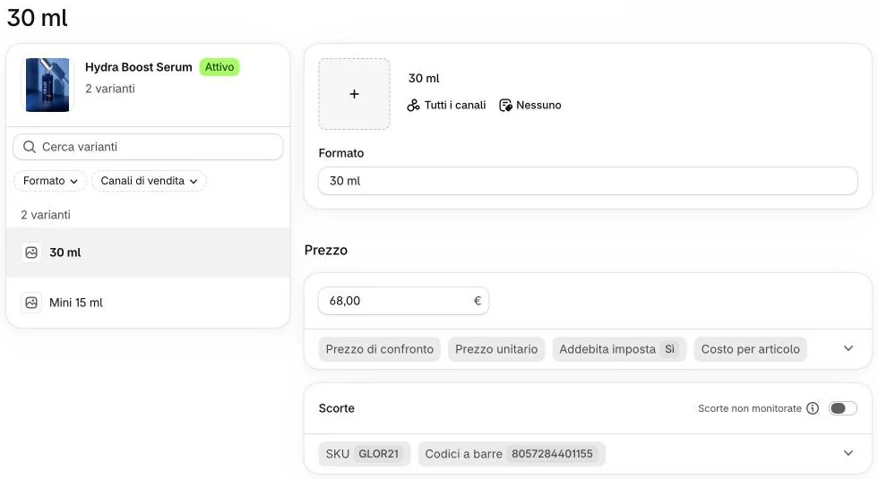

Oggi il negozio non conta le scorte: ogni prodotto si può sempre comprare. Se un prodotto finisce, il modo più semplice e sicuro è metterlo in «Bozza» finché torna.
Aprite il prodotto e, in «Varianti», cliccate la variante (per esempio «30 ml»).

1
Guardate il riquadro «Scorte»: con «Scorte non monitorate» e l’interruttore spento, il sito vende sempre.
2E se accendo l’interruttore?
Il negozio comincia a contare: compaiono le quantità da compilare per ogni variante. Non l’abbiamo provato insieme: prima di farlo la prima volta, scriveteci, perché vale per ogni ordine da lì in poi.
Quando Shopify segna una variante come non disponibile, sulla scheda il bottone diventa «Non disponibile».
Per smettere di venderlo subito, mettete lo «Stato» del prodotto su «Bozza» e cliccate «Salva».
3Finita solo la Mini?
«Bozza» toglie tutto il prodotto, anche il formato grande. Per fermare un solo formato scriveteci.
Cosa succede sul sito?
Il prodotto sparisce da catalogo, menu, home e test; recensioni, attivi e foto restano nel pannello. Più dettagli in Togliere un prodotto dal sito.
Quando torna, rimettete lo «Stato» su «Attivo» e cliccate «Salva».
Sul sito
Con «Bozza» il prodotto non c’è più sul sito; con «Attivo» torna al suo posto, con tutti i suoi testi.
Se un giorno conterete le scorte, una variante finita mostra «Non disponibile» al posto di «Aggiungi al rituale».
 3
3